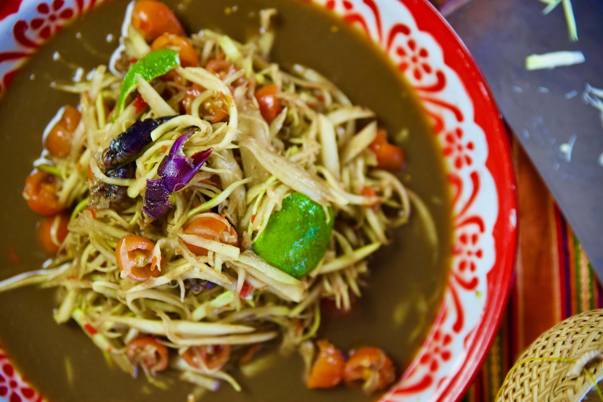

Papaya Salad

Description
Thum Mak Hoong as it's called in Laos is an essential dish for us at the table.
Especially when eating chicken or steak.
Ingredients
- Shredded Unripe Papaya
- Fermented Fish Sauce (Pa Daek)
- Salt
- Lime
- Fish Sauce
- Chilli Pepper
- MSG
- Cherry Tomatoes
- Clove of Garlic
Steps
- Using a pestle and mortar, add how many ever chilli peppers you would like.
- Crush the peppers and garlic for a bit and then add 1/2 a tablespoon of fermented fish sauce.
- Add a pinch or pinches of salt, a 1/4 teaspoon of MSG, squeeze some lime in there.
- Add a table spoon of fish sauce, and then and continue grinding it until they are all combined.
- After that put in the shredded papaya and mix. You can add the cherry tomatoes before to mash them as well or after it's a preference
- Adjust the seasoning after if it isn't to your liking and then enjoy.